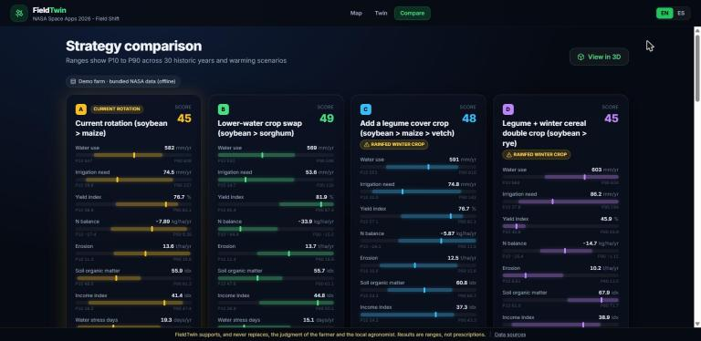

Demo and key results
Trade-offs made visible


Iowa, USA
Adding winter rye cuts erosion from 13.6 → 10.2 t/ha/yr and bare soil from 261 → 158 days, but the cash-crop yield index falls from 76.7 to 45.9.
Bajío, Mexico
A winter oats double crop would need about 259 mm/yr of irrigation versus 17 mm today, so it scores 2 against 53 for the current rotation.
Not a single winner
FieldTwin shows soil benefits against yield and water costs, so the farmer can decide.